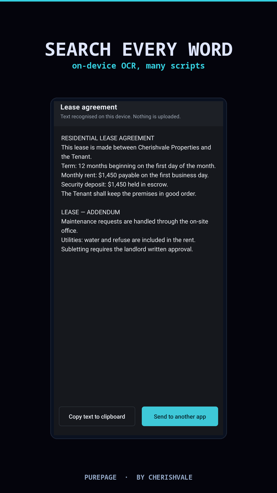
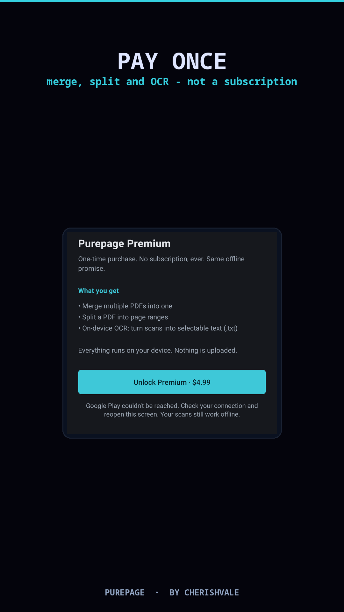
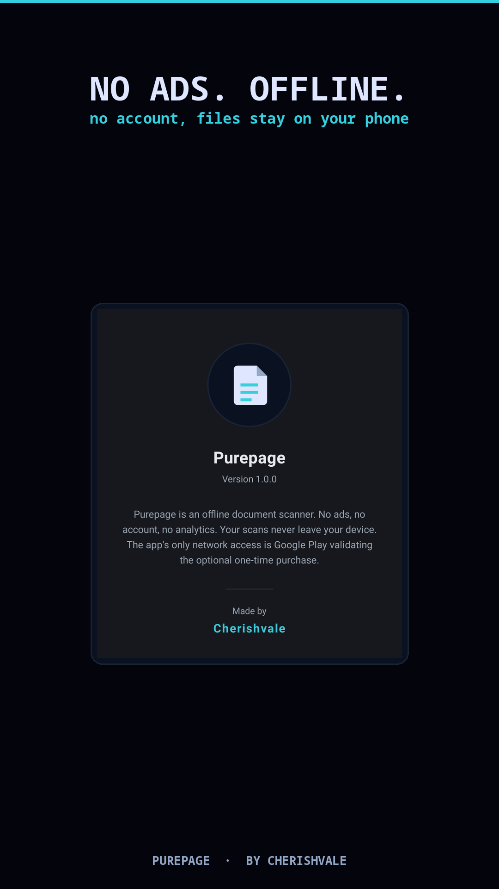

On Google Play · closed testing
Purepage is live on Google Play in its invite-only closed test. The public release is expected around 10 October 2026.



Auto edge detection finds the page and lets you drag the corners to crop and straighten a photo taken at an angle. Hands-free mode shoots the moment the phone is steady and level.
Document, black-and-white, lighten and an Auto mode that evens out shadows and uneven lighting. Torch and rule-of-thirds guides in the camera.
Two-sided mode captures the front and back of an ID or card and lays them on a single page, straight and cropped.
Capture page after page, reorder or retake any of them, or add photos from your gallery — imported photos are straightened automatically.
Reopen a saved PDF to reorder, rotate, delete or insert pages, and zoom right in to read a page clearly.
Draw a signature once and reuse it, highlight a clause, or black out sensitive details. Undo and redo as you go.
On-device text recognition makes scans searchable in Latin, Chinese, Japanese, Korean and Devanagari scripts. Read or copy the recognised text, or add a text layer so the exported PDF is searchable elsewhere.
A4, Letter or Legal, your choice of quality, an optional date stamp or watermark, then share, print or save a copy.
Compress a large document in place, and lock a PDF with a password on the way out. Protected PDFs you open are unlocked locally.
Optionally require your fingerprint, face or PIN to open Purepage, so private scans are not visible to anyone who picks up the phone.
Export the whole library to a single file and bring it back on a new phone — no cloud account involved.
Deleted scans wait in Trash for 30 days, ready to restore. There is no server copy to clean up.
There are no banners, no sign-up and nothing plays before a save. Scanning works with the radio off.
Scanning, cropping, editing, signing and on-device search are free. Premium adds three heavy tools, once.
Purepage keeps your documents on your device. Scans, crops, annotations, recognised text, the optional app lock and any PDF passwords are all handled locally, there are no analytics or advertising libraries, and deleting a scan removes it for good — there is no server copy anywhere. Library backups are files you save yourself. Network access exists solely so Google Play can validate the optional one-time purchase.
Purepage is actively maintained. If you hit a bug, a crash or anything that doesn't behave as you expect, tell us and we'll take a look — email hello@cherishvale.com with what happened. Feature ideas are welcome too, and we read every message. Updates ship regularly.